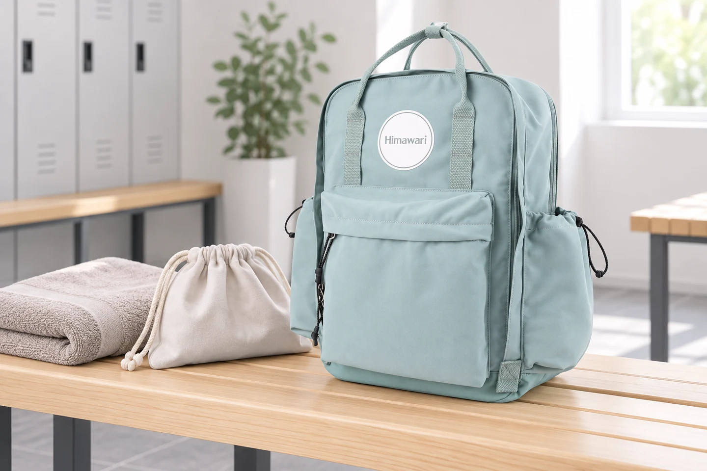

퇴근 후 운동, 갈아입은 옷이 돌아올 자리

아침에는 출근 가방이던 백팩이 저녁에는 운동 준비물의 자리도 맡습니다. 갈아입을 옷을 넣는 것으로 끝내면 운동 뒤 바뀐 상태의 물건을 어디에 둘지 남을 수 있습니다. 업무 자료를 꺼내는 순간, 옷을 갈아입는 순간, 사용한 것을 담는 순간을 따로 생각하면 같은 가방을 쓰는 날에도 준비할 묶음이 분명해집니다. 오늘 할 운동과 이용할 시설에서 필요한 개인 준비물부터 고릅니다.
시설에서 받을 것과 집에서 가져갈 것
수건과 보관 공간 등 시설에서 제공하는 것은 현재 이용 안내에서 확인합니다. 예전에 같은 종류의 장소에 있었다고 늘 제공된다고 가정하지 않습니다. 필요한 개인 소품을 정한 뒤 오늘 사용할 것만 골라놓습니다. 샤워나 갈아 신을 신발이 필요한지 등 실제 일정에 맞춰 생각할 수 있습니다. 제공 여부가 불분명한 물건은 시설에 확인할 항목으로 남기면 불필요한 부피를 줄일 질문이 됩니다.
운동화를 따로 가져간다면 신발 주머니를 포함한 모습으로 봅니다. 평소 업무 짐과 함께 넣었을 때 자연스럽게 닫히는지 확인합니다. 신발만 납작하게 눌러 다른 소품 사이에 맞추기보다 실제 이동할 형태를 유지합니다. 전체 묶음이 무리 없이 들어가지 않으면 별도 가방으로 나눌 수 있습니다. 하루의 활동이 두 가지라는 이유로 모든 준비물을 반드시 한 공간에 넣어야 하는 것은 아닙니다.
일정에 필요한 작은 소지품도 미리 생각합니다. 일상에서 쓰던 장신구나 시계를 잠시 벗을 계획이라면 돌아갈 작은 묶음을 정합니다. 시설의 귀중품 보관 안내에 맞춰 직접 관리할 위치를 선택합니다. 운동복을 꺼낸 뒤 빈 공간이 생겼다고 그곳에 귀중품을 임시로 흩어 넣기보다 계속 찾을 수 있는 자리를 유지합니다. 자기 물건과 시설에서 빌린 물건도 구별할 수 있습니다.
갈아입는 순서가 보이는 운동 묶음
운동복과 양말처럼 함께 꺼낼 물건은 한 묶음으로 준비합니다. 탈의 공간에서 모든 칸을 열지 않아도 사용할 것만 꺼낼 수 있도록 정합니다. 가방 안의 업무 자료는 이때 옮길 필요가 없는 위치로 둡니다. 실제 수납 구성이 허용하는 범위 안에서 꺼낼 순서를 정하면 바쁜 시간대의 좁은 공간에서도 펼칠 물건이 줄어듭니다. 준비물 이름보다 어느 순간 함께 쓰는지로 묶어보는 방법입니다.
벗은 일상복을 둘 자리도 함께 마련합니다. 운동복을 꺼내며 생긴 빈 묶음에 일상복을 담을지, 시설의 보관 위치를 이용할지 이용 안내에 맞춰 정합니다. 옷 주머니에 카드나 이어폰이 남아 있는지도 봅니다. 가방과 옷을 여러 번 옮기다 보면 작은 소품의 위치가 달라질 수 있으므로 벗는 순간부터 어느 물건이 어디로 돌아갈지 생각하면 귀가할 때 찾기 쉽습니다.
Himawari No.1089와 운동 묶음을 준비하는 날에는 저녁에 먼저 꺼낼 물건과 돌아오는 묶음을 나누어둡니다. 사용한 옷을 넣을 소품은 출발할 때 비어 있어도 필요한 준비물입니다. 업무 자료와 운동 후의 옷이 바로 맞닿지 않는 구성을 정하고, 시설에 도착하면 필요한 묶음부터 꺼냅니다. 운동을 마친 뒤에도 같은 구분을 유지할 수 있는지가 준비의 다음 단계입니다.

사용한 물건은 출발 때와 상태가 다르다
운동을 마친 옷과 수건은 상태를 보고 별도 묶음으로 담습니다. 땀이 밴 물건을 종이나 기기와 직접 맞닿게 되돌려 넣지 않습니다. 사용하는 보관 주머니의 관리 안내도 함께 읽습니다. 이동을 위해 잠시 분리했다는 확인과 오래 보관할 상태가 되었다는 확인은 다릅니다. 귀가 후 그 묶음을 꺼내 정리할 계획까지 남기면 다음 운동 날에 지난 물건을 발견할 상황을 줄일 수 있습니다.
신발도 개인 소지품과 나누어 챙깁니다. 시설에서 빌린 소품이 있다면 안내에 따라 돌려놓고 자신의 묶음과 섞이지 않게 합니다. 공용 탈의 자리에서는 먼저 사용할 자리를 확인하고 물건을 바닥이나 통로에 넓게 펼치지 않습니다. 옷을 갈아입은 뒤 휴대전화와 작은 파우치가 모두 돌아왔는지 봅니다. 사용한 운동 묶음과 입고 돌아갈 옷이 정리되어 있어야 귀가 준비를 이어갈 수 있습니다.
퇴근 후 운동 전에 다른 약속이 있거나 운동 뒤 이동이 더 있다면 짐을 가진 시간도 함께 계획합니다. 임시 보관이 가능한지, 계속 들고 가야 하는지 시설과 일정에 맞춰 정합니다. 젖은 소품을 넣는다고 일반 백팩 전체가 물기 분리 기능을 맡는 것은 아니므로 사용하는 별도 보관 방법을 봅니다. 필요한 관리 조건을 만들기 어렵다면 그날 가져갈 준비물과 이동 계획을 조정할 수 있습니다.
집에서는 운동에 사용한 묶음부터 꺼냅니다. 옷과 수건, 신발 주머니를 각각의 관리 안내에 따라 정리하고 가방 안쪽에 물기가 남았는지 봅니다. 다음날 사용할 업무 소품도 평소 위치로 돌립니다. 운동 묶음을 닫힌 가방에 둔 채 다음 준비까지 기다리지 않으면 무엇을 세탁하고 무엇을 다시 챙길지 구별됩니다. 시설에서 받은 물건이 남아 있다면 안내된 반환 방법도 확인합니다.
다음 운동 준비에는 실제로 쓰지 않은 물건과 없어 불편했던 물건을 참고합니다. 모든 준비물을 한꺼번에 늘리기보다 해당 시설에서 필요한 항목만 바꿉니다. 같은 운동이라도 장소나 일정이 달라지면 묶음도 조정할 수 있습니다. 출근 짐은 출근 준비로, 운동 뒤의 소품은 사용 후 정리로 마친 상태에서 다음날 가방을 채우면 두 활동의 물건이 서로의 빈칸에 남지 않습니다.